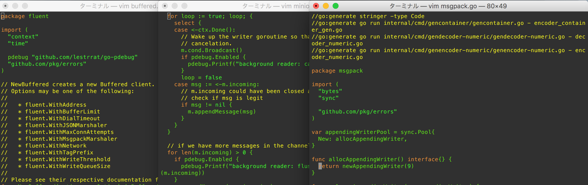
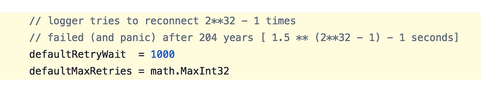
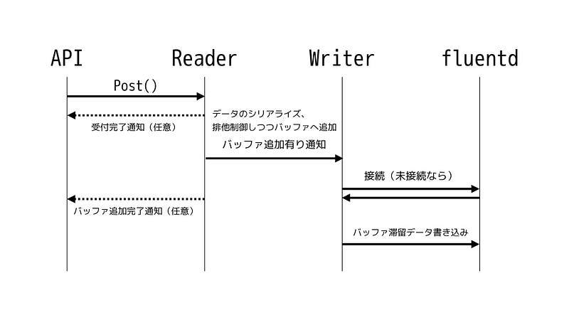
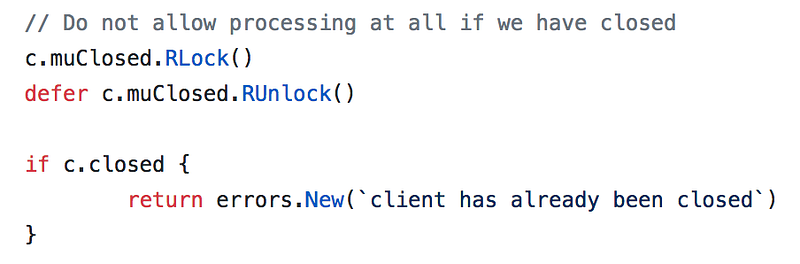
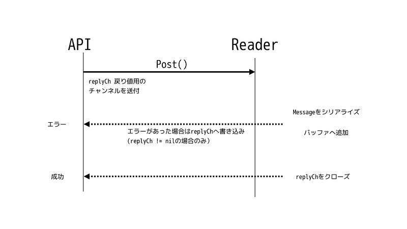
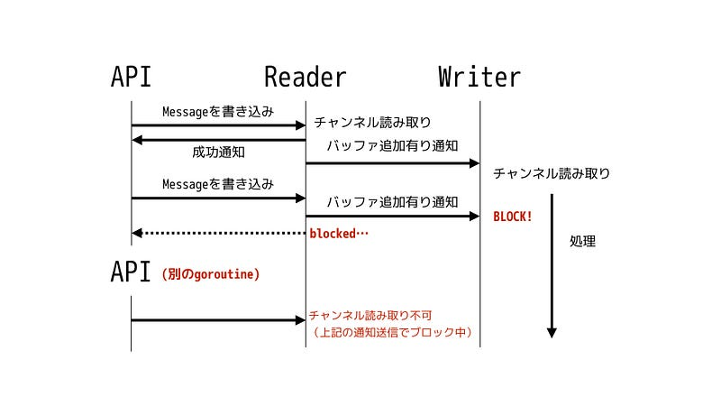
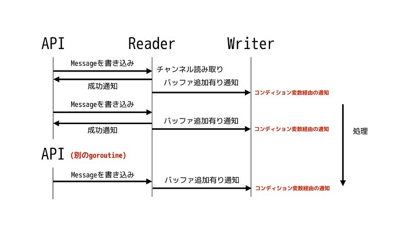

lestrrat-go/fluent-clientの紹介
lestrrat-go/fluent-clientの紹介

あるときGo言語のアプリで使うfluentdクライアントが必要になりました。色々見た後、「あ、俺自前のクライアントを書こう！」と思い立ち、イチから書いてみる事にしてみました。
(本エントリはGo2 Advent Calendarの12/1のエントリです）
結果的に出来たライブラリは良い感じで並行処理がされている気がするので、この記事はその並行処理について解説してみます。
モチベーション
まず、そもそもなんで公式のライブラリ使わないの？というところから。
moby - Moby Project - a collaborative project for the container ecosystem to assemble container-based systemsgithub.com

上記のコードは github.com/fluent/fluent-logger-golang が接続先のサーバにデータを送信できなくなったっていよいよ困った場合、エラーを返したり、正しくシャットダウンするのではなく、 panic を起こすため、それを回避する手段として panic が起きるまでのタイムアウトとリトライ数をたっぷり持つようにしている。これだと、204年間データがうまく送られなくても panic は起こらない。
現実解としてはこれで問題ないとは思うが、なんか嫌だな、というのが正直なところでした。
そこでさらにコードを細かく見ていったところ、最終的に「あ、これはAPIを変えたい」と思ったのでパッチを送るとかではなく、fluentプロトコルの勉強がてらクライアントを自前実装で書いてみました。それがこちら：
（APIを変えたい時は車輪の再発明をしてもよい、というルールで自分はやってる。細かい話は以下で）
今回はこのライブラリの並行処理の実装内容について解説していきます。
構成
このライブラリは大きく三つのgoroutineで構成されています。
- ユーザが使う部分 (API)
- ユーザが書き込んだデータを内部バッファに書き込んでいく部分 (Reader)
- バッファをサーバに送信する部分 (Writer)
API
API部分はユーザーが直接触る部分で、ユーザーから得たタグ・ペイロードを受け取り、適切に処理する部分までが責任範囲です。
APIレイヤでは同期的にサーバへデータを送信するクライアントと、非同期にデータを適時バッファリングしつつ、送信できるタイミングで一気にデータを送信するモードが実装されています。
同期クライアントも非同期クライアントも内部で使う構造体である Message に変換するところまでは一緒ですが、同期クライアントの場合はそのままそのメッセージをfluentdサーバに送信しようとするのに対して、非同期クライアントは、一旦内部バッファにデータを書き込んだ上で、サーバが受信可能になった時に可能な限りデータを送り続ける、という設計になっています。
今回は（そちらのほうがおもしろいので）非同期クライアントについて説明します。
Reader
ReaderはAPIから受け取った Message をシリアライズし、未送信データのバッファに追記していく役目を請け負っています。バッファに追記があった場合は、停止中の（可能性もある）Writerを起こし、書き込みを再開させます。
Writer
Writerは一旦起動されるとバッファに書き込む内容がある限りfluentdサーバに書き込み続けます。

流れを図にすると上記のように比較的シンプルなのですが、ReaderとWriterがそれぞれ別のgoroutineでループを回しながら処理を行っていくという点が難しく、面白い点です。
詳細解説
まずAPI側から見ていきます。主に排他制御等の並行処理の観点からおもしろいところだけピックアップしますので、それ以外はソースコードをご覧下さい。なお以下のコードのリンクは全てコミットID e59bb87d 時点のものとなります。
fluent.New()
fluent.Client のコンストラクタですが、中で NewBuffered と NewUnbuffered に別れています。今回は NewBuffered についてのみ注目していきます。
実はこのコンストラクタはAPI側は処理のほとんど全てを minion と呼ばれる裏方に委譲してしまっているため、やることがあまりありません。minion はReaderとWriterの機能を合わせて指す場合にそう呼んでいます。
minion を作成したあとは前述の通り、ReaderとWriterはそれぞれ別のgoroutineで動作するため、コンストラクタが呼ばれた時点でそれぞれのループが開始されています（L51–52）。
ここで重要なのは、このライブラリではユーザに選択肢を与えず強制的にgoroutineを開始していることでしょう。自分は基本的な考え方として「ライブラリ」は可能な限り、暗黙的にgoroutineを作るのは良い作法とは思いませんが、このライブラリの場合はそもそもこのgoroutine達が無ければ意味がないので、例外となって良いケースだと考えています。
また、goroutine作成の前に、これらのgoroutineを制御するための context.Context を作成しているのもミソです(L37)。通常はユーザがgoroutineのライフサイクルの制御を行えるようにユーザに context.Context を渡してもらう形が多いですが、ここではあくまでバックグラウンドで動作するgoroutineのためのものなので、裏方で作成・保持しておきます。
(*Buffered).Post()
公式のライブラリもそうですが、 ユーザが直接使うPost メソッドはあくまで送信データを受け取るだけであり、送信そのものはサーバに接続できた時に非同期で可能な限り一度に送り続けます。
なのでこのPostメソッドは基本的に Message オブジェクトの作成(L111–115)と、それを裏方で処理を行うReaderに送る処理（L145)しか行いません。
Post: Close()との関係
Post メソッドは複数のgoroutineからアクセスされる可能性があります。その際、 Close メソッドが呼ばれた後（もしくは同時）に新規にメッセージを送信できないようにするため、 Post メソッドが処理中の間は Close を呼び出せないようにしておくのが肝心です(L80–82)

この際、 Post は c.closed の状態を読み込むだけですので、 sync.RWMutex で Rlock を使っているのがミソです。逆に Close メソッドでは Lock を使います。
Post: 同期的な結果の通知
fluentdサーバへの送信は後で行えるにしても、メッセージをシリアライズして、内部バッファへの書き込みまで完了しているかどうかを同期的に確認したい場合があります。後で送信するつもりでキューしたはずなのに、そもそも内部バッファが満杯でデータを書き込めていなかった…というようなシチュエーションで使います。
これには fluent.WithSyncAppend(true) というオプションを Post メソッドに渡します。
syncAppend が真の場合、 Message オブジェクトにはチャンネルが渡され(L124–125)、そのまま Readerに渡されます。チャンネルを通してチャンネルを渡すと、各メッセージ単位での相互やりとりが可能になるので大変便利です。
Readerで処理が行われる際にエラーがあった場合、 Message オブジェクトに戻り値を渡すチャンネルが存在すれば、そこに結果が書き込まれます（L186–188、L211–216)。

問題が無ければ、メッセージをプールへとリリースする処理ないでチャンネルはクローズされ、呼び出し元へと通知が返ります(L22–25)。
なおこれらのチャンネルを使った操作はどれもブロックする可能性がありますので、 context.Context をうまく使って呼び出し元のユーザが任意のタイミングで処理をキャンセルできるようにしておく事が重要です。
Readerループ
Readerは(1) チャンネルからデータを受け取り、(2)シリアライズし、(3)[]byteなバッファーに追加する、というだけのgoroutineです(L129–165)。 select を使う事でユーザからメッセージが送られるか、停止リクエストがあるまでは待機してくれます。
内部バッファへの書き込みと通知
内部バッファはWriterと共有されているので書き込む際には正しく排他制御を行う必要があります(L203–204)。
Readerの重要な役目の一つ、内部バッファに書き込む情報が存在することをWriterに通知し、Writerを起こすことです。書き込むデータがなければWriterをずっとスピンさせておくのは無駄ですので、それまではWriterは待っているようになっているのです。
この処理はコンディション変数で実現されています(L201)。ここでチャンネルを使うのは適しません。
例えばバッファループへの書き込みが10回ある間に、Writerは1回しかループを回せなかったとします。チャンネルを使っていると、Writerに通知を送るのに10回値をチャンネルに書き込むか、1回だけcloseすることになります。ブロックせずに複数回チャンネルに書き込むにはその回数分バッファがあるチャンネルを作るか、受け手であるWriterが常に該当チャンネルから読み込みをしている必要があります。
バッファ付きチャンネルは書き込み回数がある一定量を上回ればブロックしてしまいますし、チャンネルを閉じてしまうと再利用ができません。複数のgoroutineからの Post が可能で、長期間、高速に処理をし続ける場合これではいけません。

コンディション変数を使う際の考え方は、書き手がなんらかの条件について、読み手に確認してほしい、という意志を伝えることです。読み手がはれを受け取った際にその条件を確認し、それが満たされていれば処理を続けます。そうでなければ次のお知らせが来るまで待ちます。
今回の場合は以下のような流れになります
- Readerが「内部バッファに何かあるはずですよ、確認してください」とお知らせを送る
- お知らせを受け取ったWriterが内部バッファの残データを確認する。残データがあれば、データ書き込みロジックへ
- 書き込むべきデータがないか、データの書き込みを終了したら、Writerはお知らせを受け取るまで、停止して待つ

Writerループ
今度はWriter側を見てみましょう。Writerはループが始まるとすぐ(L259–261)前項で説明した「待ち」状態になります。書くべきデータがなければ、サーバに接続することすら試みません。コンディション変数からの通知があった場合(L373)、条件を確認し(L360–362)、条件を満たせば待つのをやめます。
デフォルトの設定ではWriterは8KB分のバッファが溜まっていたら書き込みが必要と見なし、「条件を満たした」と判断します(L436–441)。このバッファリングが必要ない場合は fluent.WithWriteThreshold(0) を fluent.New() の引数に渡す事により、1バイトでも書き込むデータがあれば書き込みを開始するようにすることも可能です。
これらの確認が終了すると、データ送信の必要有りと判断され、それ以降の処理が始まります。
fluentdへの接続
まずサーバへの接続が試みられます。接続はループの中で行われ、失敗するとexponential backoffにより次回の接続までの時間が調整されます(L291–295)。
fluentdサーバがまだ立ち上がっていない間はWriterはここで失敗し続けますが、並行処理をしているのでAPIおよびReaderは問題なく処理を続けられます。一旦接続が成功するとその接続は書き込みが失敗するまで保持されます。
サーバに無事接続できたのが確認できたのなら、書き込むものがなくなるか、書き込みエラーが出るまでサーバへの書き込みが続きます(L386–402)。
書き込むものがなくなったところで、Writerループの冒頭に戻り、また通知待ちの状態になります。
終了時のフラッシュ
車輪の再発明をしたいと思った理由のひとつは、クライアント停止時に、内部バッファに残っているデータを可能な限り多くサーバに書き込むのを確認してから終了したい、という条件を満たしたかったことです。
そのためには、Writer goroutineが完全に終了のを待つか、待てる上限のタイムアウトが発生するまで待つ、という処理を入れる必要があります。 Close メソッドはその終了を待ちませんが(L174–185)、 Shutdown メソッドは Writer からの通知を待ちます(L204–209)。
ReaderとWriterの終了処理
APIレベルではこの通知を待つだけなのですが、裏方のReader/Writerは様々な処理を行う必要があります。
まず、Readerは停止通知を受け取ったら、APIから送られた Message の残りがないか確認する必要があります。APIとReader間のチャンネルはバッファされているので、未受信の Message が存在している可能性があるのです。ありがたいことにバッファされているチャンネルのサイズを len() で取る事ができるので、その分だけ読み込みをして、必要な処理を行います(L159–164)。
Writer側では停止通知を受け取った後は接続のキャンセルを無効にしたり(L285)、書き込みタイムアウトを無効にしたり(L325)と、可能な限り送り続けるように動作が変更されます。
そして、書き込む物がなくなったところでようやくループから脱出するのです(L335–342)。そしてようやく、API側に終了の通知が送られるように、チャンネルがクローズされるのです(L242)
まとめ
このように、github.com/lestrrat/go-fluent-client では「データを素早く、確実に送る」を主眼に公式ライブラリとは違うAPIで実装してあります。fluentクライアントとしての良し悪しはともかく、チャンネル、コンディション変数、ミューテックス等を適宜つかって、並行処理の独特な書き方が色々見られるコードになっていると思いますので、面白いかと思ってまとめてみました。誰かの役に立てば幸いです。
また、ベンチマーク等も是非参考にしてください。
なお、本ライブラリを作成するのに、ついでに（？） msgpack実装も書いてしまったので、そちらもついでに見ていただけると嬉しいです。このmsgpack実装については、 github.com/vmihailenco/msgpack の Marshal/Unmarshal APIが何故 encoding/json と違うシグネチャなのか納得できずに書き直したものです。若干ですが、処理スピードもあがっているはずです（少なくとも allocs/opは減っているはず）
以上です。Happy Hacking Go!